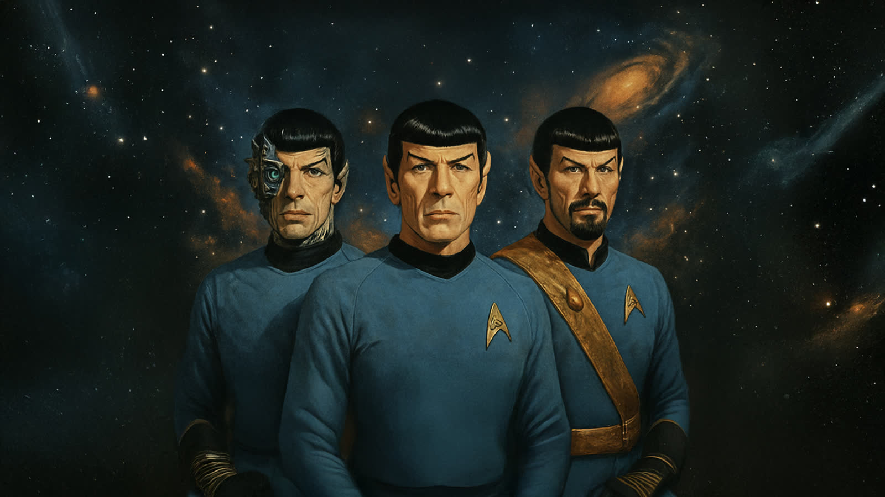

A Lonely Universe
Yesterday’s Son
The Loneliest Man
The working visual and multimedia archive, assembled from the project’s local production folders.
No matching assets
Try another asset type, folder, or search term.
ImageSource
Select an asset
—
Production note
Choose an item from the library to inspect it here. Notes and prompts can be added later without changing the page layout.
—Living archive
The page now reflects the folders.
Images, video, audio, the PDF, and continuity notes are included in this package. When the local project grows, the gallery data can be refreshed again without redesigning the site.